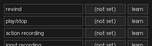
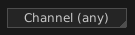

Giada is able to read MIDI messages from the external world. A physical device can be attached to control channels, volumes, properties and so on. Actually any "thing" that sends out MIDI messages can be used to drive Giada, so the choice can be expanded to softwares and scripts as well.
There are two main classes of elements that can be controlled via MIDI:
First of all make sure you have properly configured your sound card to receive MIDI messages: you can do that in the configuration panel. To configure global elements, open edit -> setup global MIDI input... and a new window will appear, containing all assignable elements.

From left to right, the first box cointains the name of the parameter. The button ("(not set)" in the picture) shows the hexadecimal value assigned to the parameter: click on it with the right button to reset it to none. Finally the "learn" button enables the so-called MIDI learn: click on it, then move a knob or press any key and Giada will assign it to the parameter you have chosen.
To configure per-channel elements, click on a channel's button and select setup MIDI input... from the popup menu. The window with assignable elements is similar to the previous one but with different parameters, of course.
Giada accepts all messages from any MIDI channel by default. However, sometimes you want to grab MIDI messages coming from a specific MIDI channel, especially when you are working with many MIDI instruments. Select a different channel from the MIDI channel selector  to make Giada process MIDI messages only if they come from the selected channel.
You can let velocity drive volume of sample channels by checking the Velocity drives volume flag. Giada will adjust the sample volume according to how forcefully the key on your MIDI device is struck. This feature is available only for sample channels in one-shot mode.